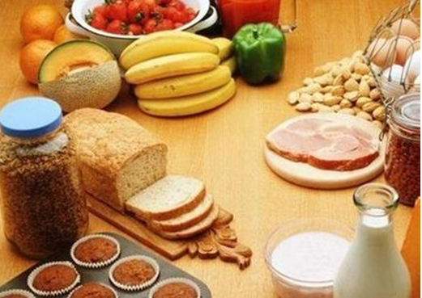
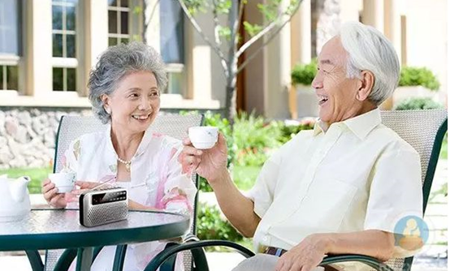

老年人由于器官逐渐老化，身体机能在慢慢衰弱，因此肠胃功能也不像年轻时那么好，经常吃过饭后更容易腹胀，因为老年人唾液、胃液、肠液的分泌量减少，消化食物的能力降低，因此如果饮食习惯不当，可能会造成经常性的腹胀，为避免这种情况，应相对调整一些饮食习惯。
吃饭时不要狼吞虎咽：这种习惯会将气体带入肠道，因而产生腹胀。尽量少喝碳酸饮料和啤酒，含有果糖或山梨醇的甜点，也是产气的食物。
高纤维食物别过量：高纤维食物有助于肠胃消化，是健康食品，但如果过量吃容易在胃肠内产生大量气体。比如麦麸纤维含量高达31%，笋干达到30%，辣椒超过40%，其余含纤维素较多的有蕨菜、菜花、菠菜、南瓜等，各种杂粮如荞麦面、玉米等也属高纤维食品。吃这些食物要注意搭配，不能过量。
晚餐少吃产气食物：比如各种豆类。豆类所含的低聚糖被肠道细菌发酵，能分解产生一些气体，进而引起打嗝、肠鸣、腹胀、腹痛等症状。因此老年人晚餐最好少吃豆制品。
多吃护胃、顺气食物：有些食物有养胃和顺气作用，比如山药健脾胃、益肾气，可促进消化吸收，黏稠质地也有保护胃壁功效；白萝卜可顺气，但要熟着吃，比如炖汤。此外，山楂、洋葱、大蒜都对胃肠有益。
克服不良情绪：平时生活中遇到不高兴的事情不要过于影响自己的情况。焦躁、忧虑、悲伤、沮丧、抑郁等不良情绪都可能使消化功能减弱，或刺激胃部制造过多胃酸，其结果是胃气增多，腹胀加剧。
粗粮是我们现在比较提倡的一种健康食材，也是在养生食材中必不可少的，但是你知道粗粮要怎样吃才健康吗？有些人吃完粗粮之后会感到肚子不舒服？粗粮要怎样吃呢？下面跟着小编一起来看看在吃粗粮的时候要注意哪些问题吧！
粗粮都包括哪些食物？
粗粮主要包括燕麦、荞麦、玉米、小米、高粱、薏米、红小豆、绿豆、芸豆等食物。
粗粮对于老年人的好处有哪些呢？
粗粮中含有丰富的B族维生素和矿物质，粗粮中还含有丰富的膳食纤维，因为膳食纤维有吸水性和持水性，所以可以预防便秘，减小一些毒素在体内的停留时间，粗粮还可以防治心血管疾病，另外粗粮也有利于防止高血糖，如果将葡萄糖的血糖指数定为100，那么富强粉馒头为88.1，精米饭为83.2，而小米为71，糙米饭为70，燕麦为55.，使血糖上升平缓，所以适量吃粗粮对老年人是非常有好处的。
一、维护牙齿健康
因为老年朋友经常吃粗粮不仅能帮助修复老年朋友咀嚼肌和牙床，而且还很有效的清洗牙缝内的污垢，起到清洁口腔，从而有助于老年朋友牙齿的健康。
二、保护心血管
老年朋友平时坚持吃一些粗粮，可以降低胆固醇预防动脉粥硬化，因为粗粮中有许多的植物纤维，刚好植物纤维进入咱们肠道里可与肠道内的胆汁酸结合，所以多吃粗粮可以很好的起到帮助老年人保护心血管的作用。
三、防止胆结石形成。
胆固醇如果长期积累不排出的话，就容易在胆内形成结石。植物纤维就是起到维持胆固醇的正常比例，从而预防胆结石的危害。
三、促进排毒
我们都知道粗粮对于我们的肠胃来说，可以很好的促进我们的消化，可以很好的蠕动我们的肠胃，最终可以很好的起到预防便秘，从而起到促进排便毒的功效。
粗粮虽好 小心过量对老年人的危害
很多老年朋友都听说粗粮好，殊不知粗粮过量危害也是很大的。粗粮摄入过量可影响老年人的消化吸收，本来老年朋友们的消化吸收功能就比年轻人低，粗粮吃多了影响更大，老年人粗粮摄入过量还会影响某些矿物质的吸收，比如说钾、钙等，另外粗粮摄入过量还会导致便秘，所以吃粗粮一定要适量。
老年人如何正确吃粗粮？
由于老年人容易发生便秘，糖脂代谢异常，患心血管疾病的危险性也会增加，所以适量吃粗粮对老年人有益。建议老年人每天能吃到100g(2两)粗粮或全谷类食物。
最后，由于老年人咀嚼功能会有所下降，所以建议老年人选择蒸、煮、炖等方式烹调粗粮和其它食物，做到健康吃粗粮，享受健康的老年生活。
粗粮过量对老年人的危害很多老年朋友都听说粗粮好，殊不知粗粮过量危害也是很大的。粗粮摄入过量可影响老年人的消化吸收，本来老年朋友们的消化吸收功能就比年轻人低，粗粮吃多了影响更大，老年人粗粮摄入过量还会影响某些矿物质的吸收，比如说钾、钙等，另外粗粮摄入过量还会导致便秘，所以吃粗粮一定要适量。
老年人最需要补的营养有哪些呢？我国老龄化越来越严重，中老年人越来越多，如何给老年人一个健康的身体呢？老年人需要怎样补充营养呢？下面我们一起来看看吧！
1.蛋白质
老年人要保持生命活力，延缓衰老，蛋白质的供给必须充足，尤其应注意食物的用量和消化吸收率。蛋白质营养状况良好，还可以增强老年人抵御疾病的能力。
老年人应多吃一点动物性食品，如肉、蛋、乳及豆制品，其蛋白质含有丰富的氨基酸，并且数量充足、比例合适、易于消化、适于老年人食用。按照我国饮食情况，老年人蛋白质的需求量一般为每千克体重1克，占饮食总热量的12%～14%，如果食用量过多，会增加肾脏的负担。
2.钙
钙不仅影响骨骼健康，还对心血管、内分泌、神经、肌肉系统具有重要作用。老年人对钙的需求较高，但调查显示，我国老人每天每人的钙摄入量仅在500毫克左右，仅为推荐量的一半。长期缺钙的老人更容易出现关节疼痛、身高变矮、食欲减退、失眠多梦等问题。因此，老人应该定期监测骨密度，并注意补钙。
食物中，牛奶、酸奶、奶酪是公认的补钙佳品，乳糖不耐受的人可以选择酸奶。补充剂中，碳酸钙等无机钙性价比最高，氨基酸钙、乳酸钙、葡萄糖酸钙等有机酸类钙盐吸收利用率略高。
3.铁
调查显示，我国各类人群的平均贫血率是20.1%，而老年人群的贫血率高于全国平均水平，这和缺铁有一定关系。长期缺铁和贫血会导致老人虚弱无力、抗病能力下降、大脑容易疲劳、记忆力减退等问题。
补铁的最佳食物是富含血红素铁的肉类和动物内脏，其中牛肉的铁含量较高。另外，一些黑色食物，比如黑木耳、黑米、黑芝麻等也是补铁的好食物。值得提醒的是，果蔬中富含的维生素C可以促进铁吸收，因此补铁是最好将肉类、谷类、果蔬同食。需要强调的是，贫血不代表一定缺铁，也可能由于慢性病或缺乏维生素B12、叶酸导致，因此老人贫血要先查明病因。
老年人应多吃富含维生素的食物，这对维持老年人健康、增强抵抗力、促进食欲与延缓衰老有重要作用。多吃新鲜的有色叶菜或水果，每天可食物部分粗粮;此外，鱼、豆类和瘦肉能供给优质蛋白及维生素B2等。
但是，根据我国人民的饮食结构和特点，有些维生素的摄入量较难达到标准，如维生素A 、维生素B2等，可以考虑除饮食外，补充一定数量的维生素制剂。但要注意，补充维生素时，对脂溶性维生素，如维生素A、维生素D、维生素E，用量不能过大，以免引起不良反应。
5.锌
细心的子女会发现，父母年老后做的菜越来越咸，这和老人味觉退化有关，而适当补锌可以提升味觉。日本大学医学部调查发现，60～65岁的味觉障碍者中，28%血液里锌含量不足，而通过补锌，70%的人症状得到改善。因此，味觉不好、食欲不振的老人可以到医院检测体内锌含量，如果确实缺锌要及时补充。严重缺锌可在医生指导下口服含锌药物。
缺锌不太严重和健康的老人不妨多吃含锌的食物来对抗味觉障碍。食物中锌的供应主要来自贝类、虾蟹、肉类、鱼类，芝麻、松子的锌含量也很高，而精米白面和果蔬中的锌含量较低。
老人要选择正确的保健养生方式，不妨试试喝好“三杯水”，远离疾病保健康。
晨起空腹一杯水
起床后，可空腹喝一杯水，因为睡眠时身体出汗和尿液分泌，导致人体损失了很多水分，起床后即使不感觉口渴，但体内仍会因为水分缺乏而导致血液粘稠。因此，起床后一定要喝一杯水慢慢补充水分。
睡前一杯水
当人们睡熟时，呼吸，汗腺仍然在排出水份，当体内水份减少过多时，血液粘稠度增高，睡前一杯水，可有效降低血液粘稠度，预防容易发生在秋冬凌晨的像心绞痛，心肌梗死这类疾病。
运动后一杯水
老人在运动后，应特别注意补充水份。运动时汗液带走电解质，且消耗较多能量，若不注意，运动后极易发生低血糖，严重甚至引起晕厥。因此，运动后，建议老人们根据实际情况适量饮用淡盐水，淡糖水。
最近，媒体上屡屡出现朋友圈“晒跑族”膝关节受损的报道，让不少人心有余悸，并将目光转向其他的替代运动，跳绳一时间也成为热搜项目。
跳绳确实是一种不错的运动方式，研究表明，跳绳对心脑血管、肺功能均有一定好处，并且能够改善骨质疏松，增加神经系统协调性，坚持跳绳还能改善抑郁情绪和失眠问题。
既然跳绳有这么多好处，是不是所有人都能跳呢？年龄太大，腿脚不便的人，中度以上高血压人群，心绞痛频繁发作的人，心衰、严重心律失常的人，都不宜跳绳。心脑血管病患者应选择慢速、低强度的跳绳方式。
心率是跳绳时可以参考的一个衡量标准，这也是普通运动的原则，即运动时，不要超过人体可以负荷的最高心率。一般来说，最高负荷心率为220减去年龄值。比方一个60岁的人，最高负荷心率为220-60=160。而如果运动者患有心脑血管疾病，则建议运动心率达到最大心率的60%就可以。因此，对于一个60岁、患有心脑血管疾病的人而言，跳绳的心率在90-100就可以了。心脑血管病患者跳绳时如果出现呼吸困难、身体不舒服等，则要立即停止跳绳，并及时到医院检查。
正确跳绳的方法
1.跳绳时间：尽量选择下午运动，避免早上6时到10时，特别是心脑血管病患者。
2.场地选择：主张铺地毯或者在草地上跳，地面平坦、不能太松软，否则容易扬尘，对肺不利。
3.准备动作：应适当活动，将关节全部活动开。
4.跳绳方法：要适当屈膝，落地时前掌着地，减少对踝关节和膝关节的冲击。
5.跳绳速度：建议先慢后快。
1．开心快乐。研究发现，快乐使人年轻，压力有害健康。打坐和锻炼等活动都能有效解压。
2．多吃蔬菜。氧化作用会加速人体细胞衰老。蔬菜等富含抗氧化剂的食物可减速衰老进程。
3．避免食糖。即使是少量，食糖可显著缩短寿命。
4．注意保湿。保湿产品可以保持皮肤柔软滋润，更显年轻。
5．不要抬眉。习惯性抬高眉毛容易导致抬头纹过早出现。
6．保证睡眠。大部分人每晚需要至少7小时睡眠。
7．经常吃鱼。鱼肉中的欧米伽3脂肪酸特别有益于皮肤健康。
8．抹防晒霜。防止紫外线伤害皮肤。
9．远离香烟。吸烟最易让人未老先衰，同时避免二手烟。
10．打破常规。打破常规，改变习惯，有益大脑健康。旅行和学习外语之类的活动都是很好的选择。
11．补充维D。研究发现，维生素D对于缓解衰老进程具有特别重要的作用。
12．多吃水果。与蔬菜一样，水果也含有大量的抗氧化剂，而且有益补充水分。
13．不化浓妆。素颜有益保持皮肤滋润有弹性。
14．漂白牙齿。经常喝咖啡和红酒容易导致牙齿变色，适当漂白牙齿，可让人更显年轻。
15．戴太阳镜。不仅可保护眼睛，而且有助于减少眼角鱼尾纹。
16．常吃豆类。豆子和扁豆之类的食物富含微量元素，有益保持水分，皮肤更年轻。
17．经常饮茶。茶叶富含抗氧化剂和抗癌成分，每天喝茶有助于提神醒脑，赶走压力。
18．有氧运动。既减肥，又有益血管健康。
19．力量训练。可练就健美匀称的肌肉。
20．全谷食物。未经过加工的全谷食物是维生素、矿物质和可溶性纤维素的优质来源，是高强度锻炼后补充能量的绝佳食物。
21．吃橄榄油。摄入橄榄油等健康脂肪，防病强身皮肤好。
22．少看电视。建议每周看电视时间别超过5小时。
23．吃八分饱。减少食物热量摄入是减缓衰老延年益寿的最有效方式。
24．常吃坚果。坚果富含抗衰老脂肪、维生素和矿物质，因而是完美零食。
25．喝点红酒。红葡萄酒中富含抗衰老成分白藜芦醇。
26．避开加工肉食。加工肉食与很多健康问题存在关联。